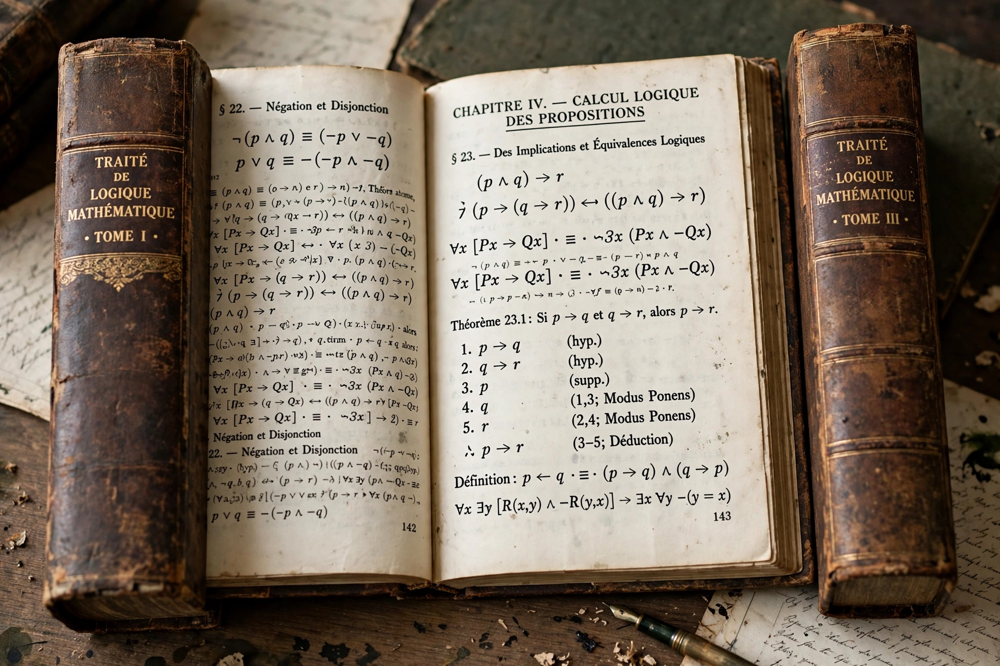

| Principia Mathematica | |
|---|---|
| Authors | Alfred North Whitehead; Bertrand Russell |
| Language | English |
| Subject | Foundations of mathematics |
| Publisher | Cambridge University Press |
| Published | 1910, 1912, 1913 (3 volumes) |
The Principia Mathematica (often abbreviated PM) is a three-volume work on the foundations of mathematics written by Alfred North Whitehead and Bertrand Russell and published in 1910, 1912, and 1913. In 1925–27, it appeared in a second edition with an important Introduction to the Second Edition, an Appendix A that replaced ✳9, and a new Appendix B and Appendix C.

PM was an attempt to describe a set of axioms and inference rules in symbolic logic from which all mathematical truths could in principle be proven — a central project of logicism. As such, it was one of the most ambitious products of the logicist school, following on from Gottlob Frege's Grundgesetze and Russell's The Principles of Mathematics. The authors' ramified theory of types was designed to avoid the paradoxes, such as Russell's paradox, that had undermined Frege's system.
The work is famously forbidding: its dense notation means that even the proof that 1 + 1 = 2 (proposition ✳54.43) is not completed until deep into the first volume, with the comment that "the above proposition is occasionally useful".
Principia Mathematica is widely considered one of the most important works in mathematical logic of the twentieth century. In 1931, Kurt Gödel's incompleteness theorems showed that no consistent system as powerful as PM could prove its own consistency, ending the hope of a complete and consistent axiomatisation of all of mathematics. The Modern Library placed PM 23rd in its list of the top 100 English-language nonfiction books of the twentieth century.